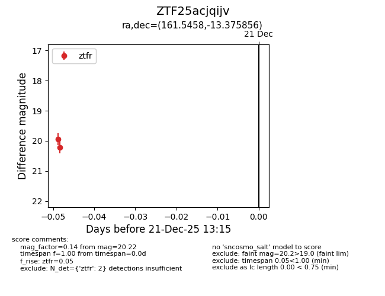
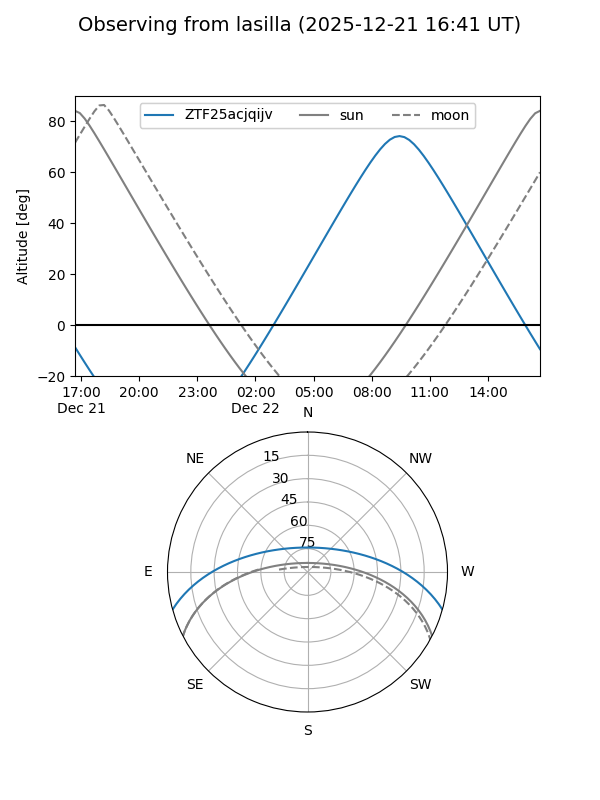
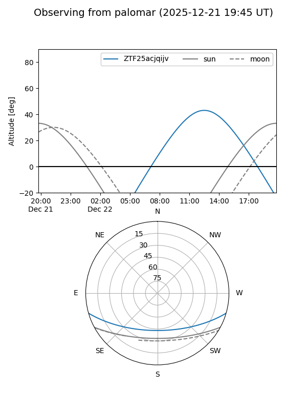

ZTF25acjqijv
Target ZTF25acjqijv at 2025-12-21 13:18
Aliases and brokers:
FINK: fink-portal.org/ZTF25acjqijv
Lasair: lasair-ztf.lsst.ac.uk/objects/ZTF25acjqijv
ALeRCE: alerce.online/object/ZTF25acjqijv
alt names
ZTF25acjqijv (ztf,fink_ztf)
Coordinates:
equatorial (ra, dec) = 161.5458,-13.37586
equatorial (HMS+DMS) = 10:46:10.98,-13:22:33.08
galactic (l, b) = (262.0889,+39.36330)
Flags:
Photometry:
last ztfr=20.22
2 ztfr detections
Lightcurve

Visibility


Additional plots